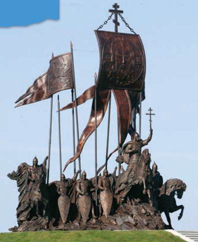
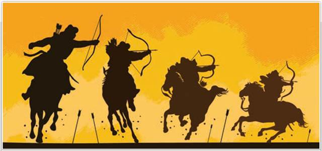
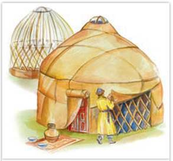
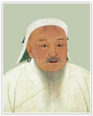
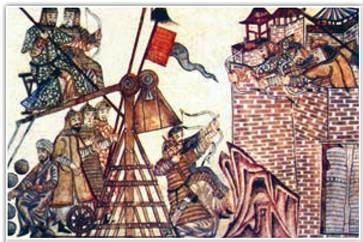
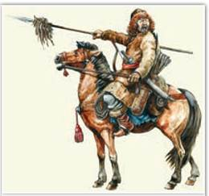
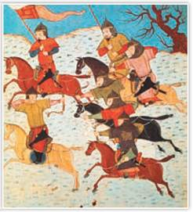
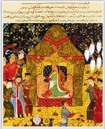
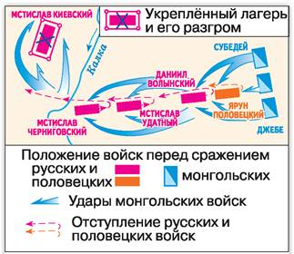

Мемориал «Князь Александр Невский с дружиной». Скульпторы В. Шанов, Д. Успенская. 2021 г. Псковская область
Установлен на берегу Чудского озера, близ деревни Самолва, примерно на том месте, где в 1242 г. произошло знаменитое Ледовое побоище.
XIII век стал временем тяжёлых испытаний для русских земель. У границ Руси появились войска Монгольской империи. Сила их была такова, что противники Руси — половцы обратились к русским князьям за помощью. Однако монголы оказались сильнее, и Русь лишилась независимости. Не скоро земля наших предков восстала из пепла и начала собирать силы для решительного удара.

Монгольские воины-лучники в бою
На рисунке изображён тактический приём монгольских лучников, который давал им преимущество в бою, — хоровод, пляска, или монгольская карусель. Подробнее о нём вы узнаете из параграфа.
РОССИЯ
МИР
1. Монголы в конце XII — начале XIII в. «В лето 1223... пришли народы, о которых никто точно не знает, кто они, и откуда появились, и каков их язык, и какого они племени, и какой веры. И называют их татары...» — написал летописец и ужаснулся. Вспомнил он, что предрекал когда-то один христианский проповедник: перед концом света появятся народы, которые «пленят всю землю».
Кто же были эти никому не ведомые «татары»? По одной из версий, общим именем татар средневековые авторы называли многочисленные племена кочевников азиатских степей. Наряду с самими татарами это были кереиты, найманы, обитавшие рядом с татарами монголы и др. Термин «монголо-татары» появился в исторических трудах XIX в. Рассказывая о Монгольской империи, современные историки используют название «монголы».

Юрта — жилище монголов
Подробнее. В основном монголы занимались кочевым скотоводством, но большим подспорьем в их хозяйстве была и охота. Из шерсти животных они катали войлоки, которыми укрывали свои переносные жилища — юрты. Монголы владели кузнечным ремеслом, умели изготавливать одежду, обувь, конскую сбрую, оружие — сабли, копья, луки. Учёные полагают, что изменение климата привело к сокращению пастбищ на обширных степных пространствах Центральной Азии. Это обострило и без того жестокую межплеменную борьбу за кочевья. Кроме того, вожди кочевых племён (ханы) и родоплеменная знать (нойоны) видели в войне источник пополнения своих богатств. Первобытное равенство монголов осталось в прошлом. Ханы и нойоны владели большими табунами коней, стадами верблюдов, отарами овец, а также лучшими пастбищами. Знать имела прислужников-рабов и наймитов-батраков. Опираясь на лично преданных воинов (нукеров), ханы держали в повиновении простых скотоводов. По степи разъезжали отряды «людей длинной воли». Так называли тех, кто, покинув свои племена, жил разбоем или нанимался на службу к хану, нойону, а иногда и к знатному китайцу.
2. Образование империи монголов и начало походов Чингисхана. Воинственные монголы совершали грабительские набеги на китайские земли, захватывали у соседей военную добычу, воевали между собой. В начале XIII в. в ходе многочисленных войн прославился храбрый воин Темучин (или Тэмуджин). К 1205 г. вокруг Темучина сплотилась знать разных монгольских племён, собирались отряды «людей длинной воли».
Войной и договорами Темучин создал из монгольских племён единую державу. В 1206 г. на курултае (съезде знати) он был провозглашён Чингисханом — правителем Монгольской империи. А вскоре его уже называли «сотрясателем вселенной». Несомненный талант полководца сочетался в нём с даром правителя.

Чингисхан. XIII в.
Подробнее. Темучин родился между 1155 и 1162 гг. В детстве ему довелось многое испытать. Отец будущего полководца, доблестный воин Есугей, победил хана племени татар Тэмуджина-Уге и назвал своего первенца его именем. Через 10 лет Есугей был отравлен в татарском кочевье. Повзрослев, Темучин отомстил за отца. Он разбил татар и приказал казнить всех пленников, кто был ростом выше колеса телеги. Женщин и младенцев Темучин раздал своим людям. Почти все татары погибли, но название их племени закрепилось за всеми кочевниками монгольских степей.
Чингисхан совершал один военный поход за другим, вдохновляя своих воинов мечтой о покорении мира «от моря до моря» (от Тихого океана до Атлантического). Покорённые народы становились его подданными, а воины завоёванных стран вливались в монгольскую армию. В начале походов великий хан имел 30 тыс. воинов, позже его армия увеличилась до 300 тыс. человек. В 1206—1211 гг. Чингисхан покорил бурят, якутов, киргизов, тангутов, уйгуров. К 1215 г. была завоёвана империя Цзинь (северные территории современного Китая).

Монгольские воины рядом с осадным орудием. Миниатюра из хроники XIV в.

Монгольский всадник
В войнах с империей Цзинь воины Чингисхана научились использовать китайскую осадную технику: катапульты, тараны, огнемётные машины. Применив военный опыт противника, монголы создали свою тяжёлую конницу.
В 1219—1221 гг. армия Чингисхана воевала уже в Средней Азии. Под натиском монголов пали древнейшие города государства Хорезмшахов: Ходжент, Бухара, Самарканд, Ургенч и др. Богатые центры ремесла и торговли превратились в руины. По данным средневековых источников, погибли сотни тысяч жителей. Лишь искусных ремесленников монголы брали в плен и угоняли в степь, остальное население безжалостно истребляли.
3. Устройство государства монголов. Монгольская империя вошла в историю как самое большое государство с непрерывной границей. Чтобы управлять огромной империей, нужны были единые, закреплённые письменно правовые нормы. Таким общемонгольским сводом законов стала Великая Яса Чингисхана. Историки полагают, что Яса действовала, скорее, как устное право. Её оригинальные списки неизвестны, а о содержании свидетельствуют персидские и арабские источники. Яса Чингисхана провозглашала веротерпимость в пределах империи монголов. Право исповедовать любую религию помогало сплотить подданных великого хана в единое государство.
Население огромной монгольской державы было поделено на десятки, сотни, тысячи и тумены (10 тыс. человек). На Руси тумен называли словом «тьма». Каждый десяток выставлял одного воина, снабжал его запасом еды и 3—5 конями. Воин имел 2—3 лука, 3 колчана стрел, саблю, топор и верёвки, чтобы тянуть стенобитные машины.

Монгольские конные лучники. Средневековая миниатюра
Грозным оружием монголов был лук — самый мощный для своего времени. Его тугую тетиву мог натянуть только очень сильный воин, поэтому лучников готовили с раннего детства. Монгольские стрелы пробивали доспех с 50—70 м. Лучник мог выпустить несколько стрел в минуту. В бою монголы скакали кругом перед строем противника и при этом осыпали его ливнем стрел, практически оставаясь недосягаемыми. Этот приём изображён на иллюстрации в начале параграфа. Монгольские лучники сыграли не последнюю роль в завоевательных походах Чингисхана и его потомков.

Темучин на троне. Миниатюра из средневековой рукописи
ТОЧКА ЗРЕНИЯ
Из книги историка Б. Владимирцова «Чингисхан»
После завоевания обширных областей, культурных народов, после создания Монгольской империи взгляды Чингисхана на устройство государства остались всё теми же, какими они были, когда ему удалось объединить под своей властью все монгольские племена, «все поколения, живущие в войлочных кибитках». Чингис до конца дней смотрел на государство как на вотчину, принадлежащую его роду... По мысли Чингиса, его потомки вместе с монгольской знатью, вместе со всеми монголами должны вечно жить в условиях кочевого быта, потому что кочевникам легче и привольнее существовать, легче властвовать над оседлым населением. На оседлое население городов и сёл Чингис смотрел как на вечных рабов своего кочевого государства...
Войско монголов, как и всё население Монгольской империи, делилось на десятки, сотни, тысячи и тумены во главе с десятниками, сотниками, тысячниками и темниками. В отрядах царила строгая дисциплина и взаимовыручка. За трусость одного казнили десяток, ослушников зверски убивали. «Делайте так, чтобы даже имени вашего боялись» — эта установка Чингисхана объясняла жестокость его воинов не только в бою, но и по отношению к мирному населению. Образцовая организация войска и железная дисциплина обеспечивали победы монголов.
Многие народы пострадали от опустошительных походов армии Чингисхана. Кочевники-монголы были равнодушны к достижениям земледельцев. Они безжалостно разрушали оросительные системы в древних центрах земледелия, из-за чего началось наступление пустынь. Однако объединение огромных территорий под властью монгольского хана в итоге способствовало восстановлению международной караванной торговли. Это подробно описал в своей книге венецианский путешественник Марко Поло.
Чингисхан в ходе завоевательных походов объединил под своим началом разные народы и государства, значительно расширив территорию Монгольской империи.
4. Битва на Калке. В 1220 г. Чингисхан послал полководцев Джебе и Субедея с отрядом в 40 тыс. воинов в разведывательный поход. Опустошив Северный Иран, монголы проникли в Закавказье. Обойдя неприступную крепость Дербент, завоеватели вышли на Северный Кавказ.
Ясы (аланы) и половцы вместе встретили неприятеля, но Субедей убедил половцев заключить с ним мир и уйти. В результате ясы, оставшиеся одни, были разбиты. Но вскоре, нарушив договорённость, монголы неожиданно обрушились на половцев. Тогда половецкий хан Котян обратился к галицкому князю Мстиславу Удатному: «Сегодня нашу землю отняли, а вашу завтра возьмут, поэтому помогите нам».

Битва на реке Калке
С опорой на текст параграфа и схему расскажите о ходе битвы на Калке.
По призыву Мстислава Удатного против «неведомых татар» выступили Мстислав Киевский и Мстислав Черниговский с младшими князьями. В конце мая 1223 г. за пределами Руси на реке Калке состоялась битва. Среди русских князей не было единства. Мстислав Киевский встал лагерем на высоком холме на правом берегу Калки. Мстислав Удатный тайно от черниговцев переправился на левый берег. С ним пошли волынский князь Даниил Романович и всадники Котяна.
Дружина Даниила вместе с половцами теснила врага. Но удар главных сил монголов опрокинул русско-половецкий отряд. Отступая, он смял ряды полков Даниила. Под удар попали и переправившиеся на левый берег полки Мстислава Черниговского. И была «сеча зла», напишет древнерусский автор, «и были побеждены русские князья».
Три следующих дня монголы осаждали острог Мстислава Киевского. Князья согласились сложить оружие, поверив, что их отпустят за выкуп. Летопись сообщает, как монголы ворвались в русский лагерь и перебили рядовых воинов. Князей, взятых в плен, они связали и бросили на землю. Положив на пленников доски острога, монголы сели на них пировать.
В битве на Калке погибло 12 русских князей и многие воеводы. Из рядовых воинов в живых остался лишь каждый десятый. Отряды монголов дошли до Новгород-Северского, потом направились к Волжской Булгарии. Потерпев поражение от волжских булгар, они повернули назад в степи.
ПОДВЕДЁМ ИТОГИ
В начале XIII в. возникло Монгольское государство во главе с Чингисханом, который приступил к завоевательным походам. В течение короткого времени монголам удалось покорить множество стран и народов.
Вопросы и задания
Работаем с хронологией
Вспомните, кто правил во Владимиро-Суздальской земле в то время, когда Темучин был провозглашён Чингисханом.
Работаем с источником
Прочитайте отрывок из труда ан-Насави, историка и секретаря последнего правителя Хорезма, и ответьте на вопросы.
[Люди] стали свидетелями таких бедствий, о каких не слыхали в древние века, во времена исчезнувших государств. Слыхано ли, чтобы [какая-то] орда выступила из мест восхода Солнца, прошла по земле вплоть до Баб ал-Абваба [Дербента], а оттуда перебралась в Страну кыпчаков [половцев], совершила на её племена яростный набег и орудовала мечами наудачу? Не успевала она ступить на какую-нибудь землю, как разоряла её, а захватив какой-нибудь город, разрушала его. Затем, после такого кругового похода, она возвратилась к своему повелителю через Хорезм...
Работаем с понятиями
Как у тюркских и монгольских народов назывался съезд знати для решения важнейших государственных вопросов?
ДОПОЛНИТЕЛЬНЫЕ МАТЕРИАЛЫ
«УЧИТЕЛЮ И УЧЕНИКУ».
Материалы к параграфу на портале «История.РФ».